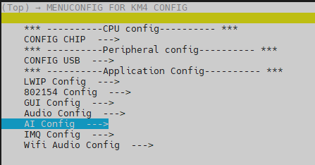

概述
TensorFlow Lite for Microcontrollers 是一个开源库，它是TensorFlow Lite的一个移植版本，旨在在数字信号处理器（DSP）、微控制器和其他内存有限的设备上运行机器学习模型。
Ameba-tflite-micro是针对瑞昱Ameba芯片的TensorFlow Lite Micro库的一个版本，包含平台相关的优化，可以在 ameba-rtos 中获取。
链接:
支持平台
操作系统 |
芯片 |
核 |
|---|---|---|
FreeRTOS |
RTL8730E |
CA32 |
RTL8713EC,RTL8726EA |
HiFi5 DSP |
|
RTL8710EC,RTL8713EC,RTL8720EA,RTL8726EA |
KM4 |
|
RTL8721Dx,RTL8711Dx |
KM4 |
编译Tensorflow Lite Micro库
KM4
在SDK的menuconfig中打开tflite_micro配置来编译Tensorflow Lite Micro库。
切换到gcc project目录
cd {SDK}/amebadplus_gcc_project ./menuconfig.py
选择KM4核

选择AI config

开启tflite_micro

{kind=link}
编译示例
KM4
TensorFlow Lite for Microcontrollers相关的示例在 {SDK}/component/example/tflite_micro 目录下。编译固件，例如tflm_hello_world，执行：
./build.py -a tflm_hello_world
教程
MNIST
概述
MNIST (Modified National Institute of Standards and Technology database) 是一个大型手写体数字的图片数据集。本教程基于MNIST数据集，展示 从训练模型到部署，并在Ameba SoC上使用tflite-micro进行 推理 的一个完整流程。
示例代码在 {SDK}/component/example/tflite_micro/tflm_mnist 目录下。
Note
步骤 1-4 是为了在开发机器（服务器或个人电脑等）上准备必要的文件。您也可以跳过这些步骤，直接使用准备好的文件来编译固件。
步骤 1. 训练模型
首先训练并评估基于MNIST数据集的10个数字的分类模型。您可以通过运行 python keras_train_eval.py --output keras_mnist_conv 或者 python torch_train_eval.py --output torch_mnist_conv 来选择 keras(tensorflow) 或者 pytorch 训练框架。
示例中所用模型是一个以卷积为主的简单网络结构，在数据集上进行几轮训练迭代后，再测试它的准确率。
由于微处理器上 算力 和 内存 都比较有限，我们建议关注 模型大小 以及 运算操作数。
Tensorflow/Keras框架下可以使用 keras_flops 库：
from keras_flops import get_flops model.summary() flops = get_flops(model, batch_size=1)
Pytorch框架下可以使用 ptflops 库：
from ptflops import get_model_complexity_info macs, params = get_model_complexity_info(model, (1,28,28), as_strings=False)
训练完成后，keras模型以SavedModel格式保存。Pytorch模型则以.pt格式保存，同时还会导出一个.onnx文件，用于后续的转换。
步骤 2. 转换成Tflite文件
在这个步骤中，对训练好的模型应用 训练后整数量化，并输出为.tflite格式。Ameba SoC也支持浮点模型的推理，但我们仍建议使用整数量化，因为它可以在性能下降很小的情况下，极大地减少计算量和内存。
对于使用keras(tensorflow)训练的模型，运行
python convert.py --input-path keras_mnist_conv/saved_model --output-path keras_mnist_conv
对于使用pytorch训练的模型，运行
python convert.py --input-path torch_mnist_conv/model.onnx --output-path torch_mnist_conv
有一个额外的步骤会将模型从.onnx格式转换成SavedModel格式。
然后给定一个参考数据集，使用 tf.lite.TFLiteConverter 把SavedModel格式转换成int8的.tflite格式模型。
converter = tf.lite.TFLiteConverter.from_saved_model(saved_model_dir)
converter.optimizations = [tf.lite.Optimize.DEFAULT]
converter.representative_dataset = repr_dataset
converter.target_spec.supported_ops = [tf.lite.OpsSet.TFLITE_BUILTINS_INT8]
converter.inference_input_type = tf.int8
converter.inference_output_type = tf.int8
tflite_int8_model = converter.convert()
有关全整数量化的更多详细信息，请参考 tflite官网 。
转换完成后，示例将使用int8 .tflite模型验证测试集上的性能，并生成两个包含了100张测试图像的输入和标签数组的.npy文件，以供稍后在SoC上使用。
convert.py 文件中使用了 onnx_tf库 来把onnx格式模型转换成SavedModel格式。也可以使用其他类似功能的转换库：
步骤 3. 优化Tflite并且转换成C++
使用tflite-micro官方目录提供的 tflm_model_transforms 工具，可以通过运行一些TFLM特定的转换来减小文件的大小。它还通过C++ flatbuffer api重新对齐了tflite flatbuffer，这可以在Ameba的某些平台上的加快推理速度。此步骤是可选的，但我们强烈建议执行这步操作：
git clone https://github.com/tensorflow/tflite-micro.git cd tflite-micro bazel build tensorflow/lite/micro/tools:tflm_model_transforms bazel-bin/tensorflow/lite/micro/tools/tflm_model_transforms --input_model_path=</path/to/my_model.tflite> # output will be located at: /path/to/my_model_tflm_optimized.tflite
把.tflite模型和.npy测试数据转换成部署所需的.cc和.h格式文件:
python generate_cc_arrays.py models int8_tflm_optimized.tflite python generate_cc_arrays.py testdata input_int8.npy input_int8.npy label_int8.npy label_int8.npy
步骤 4. 在芯片上用Tflite-Micro推理
example_tflm_mnist.cc 展示了如何使用训练好的模型在测试数据上运行推理，计算准确率，并且统计内存和延迟情况。
使用 netron 来可视化.tflite文件并查看模型使用的算子。然后实例化操作解析器来注册和使用所需算子。
using MnistOpResolver = tflite::MicroMutableOpResolver<4>;
TfLiteStatus RegisterOps(MnistOpResolver& op_resolver) {
TF_LITE_ENSURE_STATUS(op_resolver.AddFullyConnected());
TF_LITE_ENSURE_STATUS(op_resolver.AddConv2D());
TF_LITE_ENSURE_STATUS(op_resolver.AddMaxPool2D());
TF_LITE_ENSURE_STATUS(op_resolver.AddReshape());
return kTfLiteOk;
}
有关使用tflite-micro进行推理的更多详细信息，请参考 tflite-micro official site 。
步骤 5. 编译
按照 编译Tensorflow Lite Micro库 和 编译示例 中的步骤编译固件。